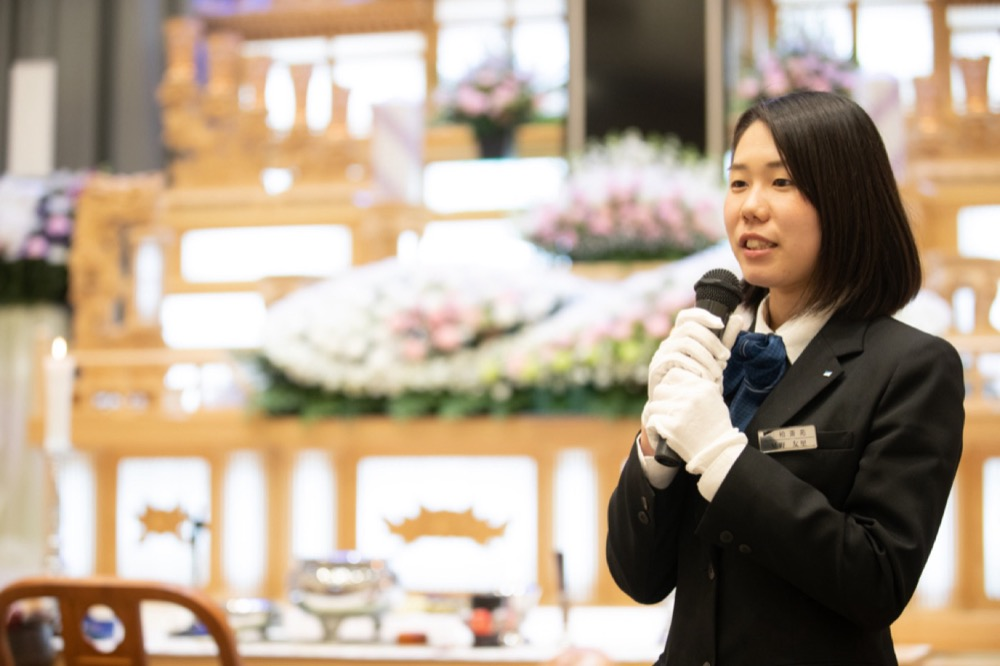
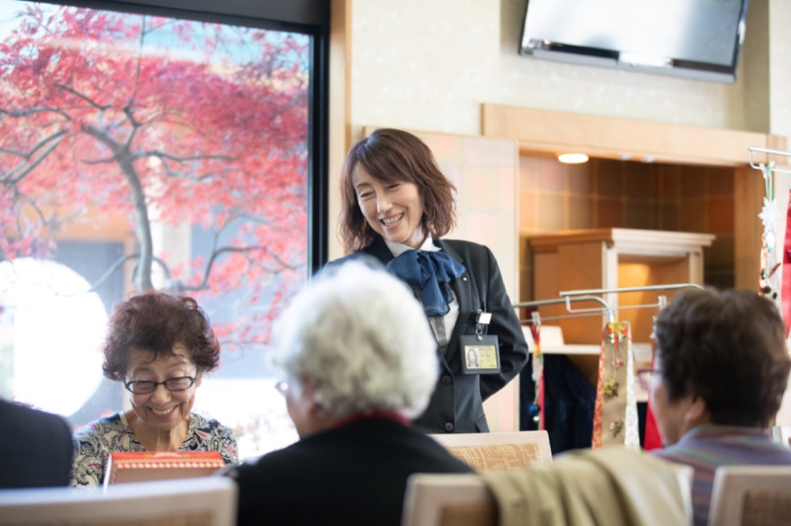
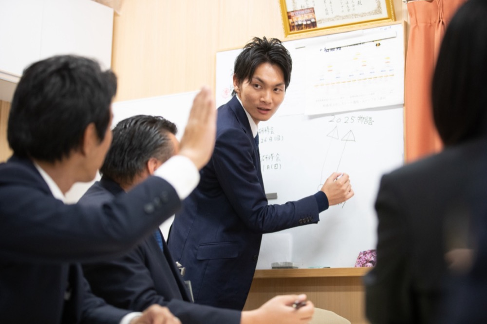
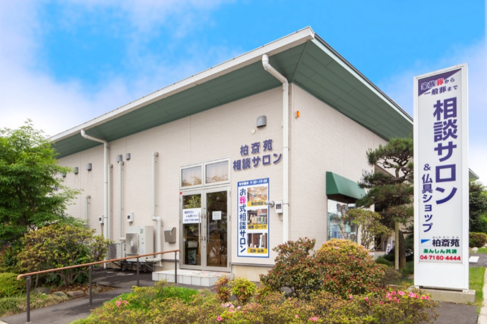

「さよなら」を「ありがとう」に変える会社
小林 裕応
株式会社柏斎苑 代表取締役
2012年日本大学卒、株式会社柏斎苑入社。2016年株式会社柏斎苑取締役就任。2016年一級葬祭ディレクター資格取得。2021年一般社団法人こもれびの和設立。2022年株式会社柏斎苑代表取締役就任。2023年柏ライオンズクラブ会長拝命。
企業サイトを見るTRACK 01
「さよなら」を「ありがとう」に変える会社

株式会社柏斎苑は、千葉県柏市を中心に、葬祭業や身元保証事業をはじめとしたライフエンディングサポートに特化した事業を多角的に展開している。
「人と人とのつながりをもって、ご利用者の「さよなら」を「ありがとう」に変えていきたい。そのために、社員一人ひとりの長所を磨き上げています。 特に葬祭事業部では、Googleレビューやお客様アンケートでも高い平均点を誇っています。その理由はまさに人が創りだす「親切さ」や「迅速さ」であり、当社の最大の特徴です。」
また生活支援サービス、高齢者の施設紹介、空き家の買取再販、霊園事業など、ライフイベントにまつわる事業を多数展開。葬儀会社の枠に留まらず、遺族会を通じて地域の方の終活をワンストップで支えている企業だ。
TRACK 02
「社員の笑顔を守りたい」二代目の覚悟と戦略

柏市は、創業者である小林代表の父が学生時代から過ごしている街だ。株式会社柏斎苑は創業当時の「地元に貢献できる場所で事業がしたい」という想いを今も変わらず大切にしている。それは、育ててもらった地に事業を通じて恩返しをするという父の意志が原点にあるからだ。
代表取締役を父から受け継ぎ、登記簿に載る自分の名前を見た小林代表。そのときに浮かんだのは、柏斎苑を父とともに支えてくれていた社員の笑顔だった。そして同時に「社員みんなの笑顔をどのように守ったらよいのか」という恐怖を感じたという。 そこで、経営者としての勉強をゼロから始めなければならないと覚悟した小林代表は、1年間のビジネススクールを通じて徹底的に自分を変え、後継経営者としての心の在り方を修得した。
そして、代表に就任してまず着手したことは葬儀事業に関わる周辺事業の展開だった。霊園事業、高齢者施設紹介事業、空き家の買取再販事業を展開し、葬儀事業の依存からの脱却を図ったのである。また社外研修や社内の学習ツールを手厚くすることで、社員全員の人間的な成長につながるような学びの環境を構築するなど人財育成にも力を注いだ。


TRACK 03
理念は必ず行動に。柏斎苑の「見える化」戦略とは
株式会社柏斎苑において最も大切にしていることは「理念経営」だ。 なぜ重要なのか。それは自社がどのような価値観を大切にし、事業を進めているのかという認識を共有する日々があってこそ、自らを信じ行動に変えていけるという確固たる意志を持っているからだ。
ただ、その理念は社員の人格を高めるためのものでなければ淘汰されてしまう、と小林代表は語る。 だからこそ株式会社柏斎苑は「ありがとう」を送り合う姿勢を大切にしている。さらに、その姿勢がわかる行動をアプリを通じて見える化したり、毎月の社内表彰で共有したりすることで理念を社内全体に浸透させる仕組みを構築しているのだ。